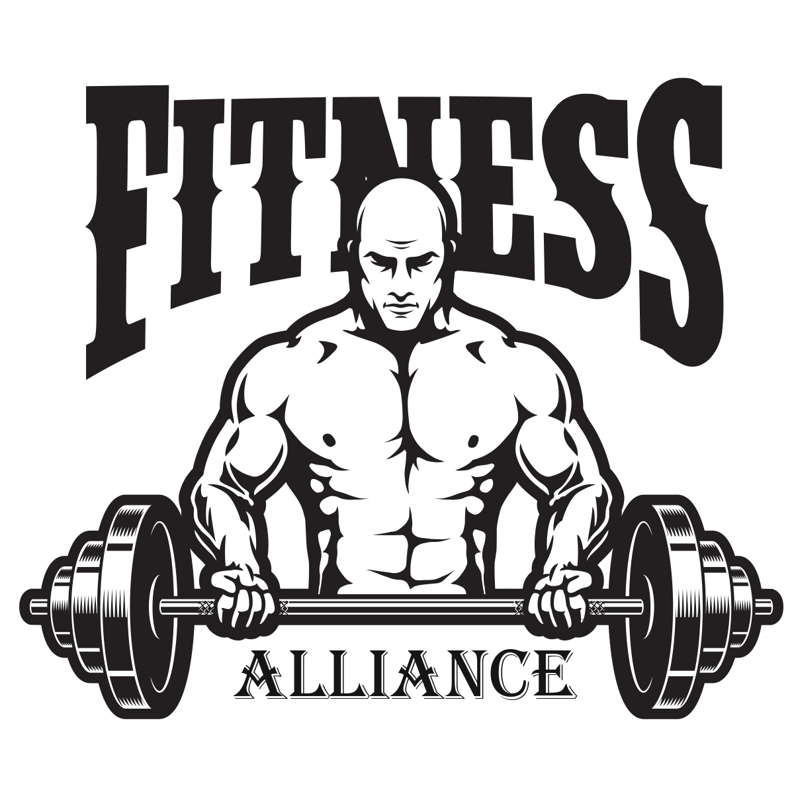
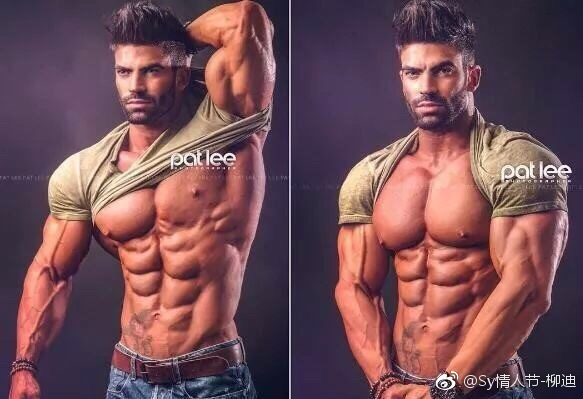

提到美国大兵，我们最先想到的就是他们酷炫的装备和发达的肌肉。跟我们注重耐力训练不同，美军似乎更看重力量锻炼，而哪怕退役后，肌肉也是不减从前，这次我们就来学学肌肉大兵们是如何快速增肌的！
健美理论中用RM表示某个负荷量能连续做的最高重复次数。比如，练习者对一个重量只能连续举起5次，则该重量就是5RM。研究表明：1-5RM的负荷训练能使肌肉增粗，发展力量和速度；6-10RM的负荷训练能使肌肉粗大，力量速度提高，但耐力增长不明显；10-15RM的负荷训练肌纤维增粗不明显，但力量、速度、耐力均有长进；30RM的负荷训练肌肉内毛细血管增多，耐久力提高，但力量、速度提高不明显。可见，5-10RM的负荷重量适用于增大肌肉体积的健美训练。
什么时候想起来要锻炼了，就做上2～3组，这其实是浪费时间，根本不能长肌肉。必须专门抽出60～90分钟的时间集中锻炼某个部位，每个动作都做8～10组，才能充分刺激肌肉，同时肌肉需要的恢复时间越长。一直做到肌肉饱和为止，"饱和度"要自我感受，其适度的标准是：酸、胀、发麻、坚实、饱满、扩张，以及肌肉外形上的明显粗壮等。
不管是划船、卧推、推举、弯举，都要首先把哑铃放得尽量低，以充分拉伸肌肉，再举得尽量高。这一条与"持续紧张"有时会矛盾，解决方法是快速地通过"锁定"状态。不过，并不否认大重量的半程运动的作用。
慢慢地举起，在慢慢地放下，对肌肉的刺激更深。特别是，在放下哑铃时，要控制好速度，做退让性练习，能够充分刺激肌肉。很多人忽视了退让性练习，把哑铃举起来就算完成了任务，很快地放下，浪费了增大肌肉的大好时机。
"密度"指的是两组之间的休息时间，只休息1分钟或更少时间称为高密度。要使肌肉块迅速增大，就要少休息，频繁地刺激肌肉。"多组数"也是建立在"高密度"的基础上的。锻炼时，要象打仗一样，全神贯注地投入训练，不去想别的事。
肌肉的工作是受神经支配的，注意力密度集中就能动员更多的肌纤维参加工作。练某一动作时，就应有意识地使意念和动作一致起来，即练什么就想什么肌肉工作。例如：练立式弯举，就要低头用双眼注视自已的双臂，看肱二头肌在慢慢地收缩。
这是使肌肉线条练得十分明显的一项主要法则。它要求当某个动作做到肌肉收缩最紧张的位置时，保持一下这种收缩最紧张的状态，做静力性练习，然后慢慢回复到动作的开始位置。我的方法是感觉肌肉最紧张时，数1～6，再放下来。
应在整个一组中保持肌肉持续紧张，不论在动作的开头还是结尾，都不要让它松弛（不处于"锁定"状态），总是达到彻底力竭。
每做完一组动作都要伸展放松。这样能增加肌肉的血流量，还有助于排除沉积在肌肉里的废物，加快肌肉的恢复，迅速补充营养。
多练胸、背、腰臀、腿部的大肌群，不仅能使身体强壮，还能够促进其他部位肌肉的生长。有的人为了把胳膊练粗，只练胳膊而不练其他部位，反而会使二头肌的生长十分缓慢。建议你安排一些使用大重量的大型复合动作练习，如大重量的深蹲练习，它们能促进所有其他部位肌肉的生长。这一点极其重要，可悲的是至少有90％的人都没有足够重视，以致不能达到期望的效果。因此，在训练计划里要多安排硬拉、深蹲、卧推、推举、引体向上这5个经典复合动作。
在训练后的30～90分钟里，蛋白质的需求达高峰期，此时补充蛋白质效果最佳。但不要训练完马上吃东西，至少要隔20分钟。
局部肌肉训练一次后需要休息48～72小时才能进行第二次训练。如果进行高强度力量训练，则局部肌肉两次训练的间隔72小时也不够，尤其是大肌肉块。不过腹肌例外，腹肌不同于其他肌群，必须经常对其进行刺激，每星期至少要练4次，每次约15分钟；选三个对你最有效的练习，只做3组，每组20—25次，均做到力竭；每组间隔时间要短，不能超过1分钟。
这是一个不是秘诀的秘诀。许多初学健美的人特别重视练习重量和动作次数，不太注意动作是否变形。健美训练的效果不仅仅取决于负重的重量和动作次数，而且还要看所练肌肉是否直接受力和受刺激的程度。如果动作变形或不到位，要练的肌肉没有或只是部分受力，训练效果就不大，甚至出偏差。事实上，在所有的法则中，动作的正确性永远是第一重要的。宁可用正确的动作举起比较轻的重量，也不要用不标准的动作举起更重的重量。不要与人攀比，也不要把健身房的嘲笑挂在心。